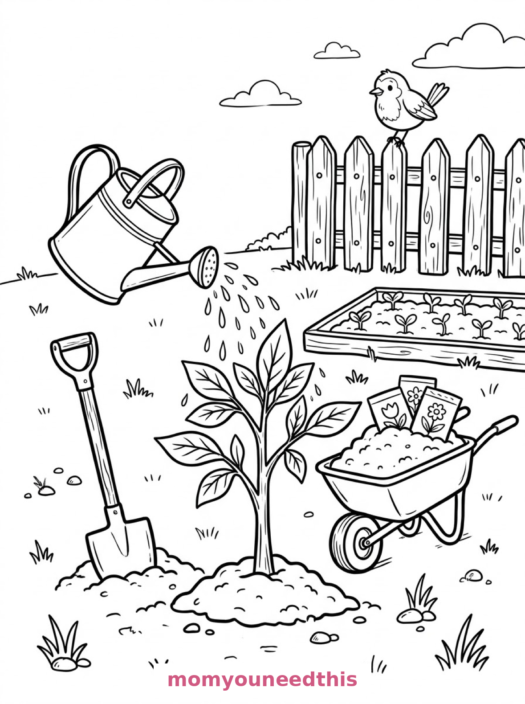
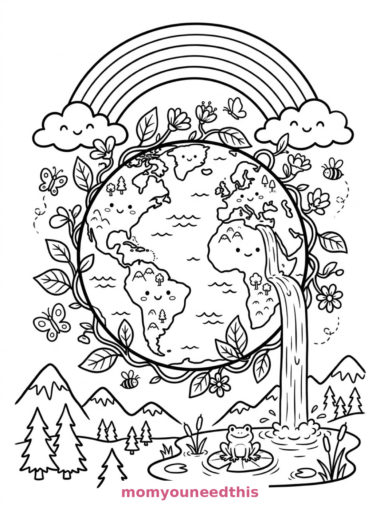
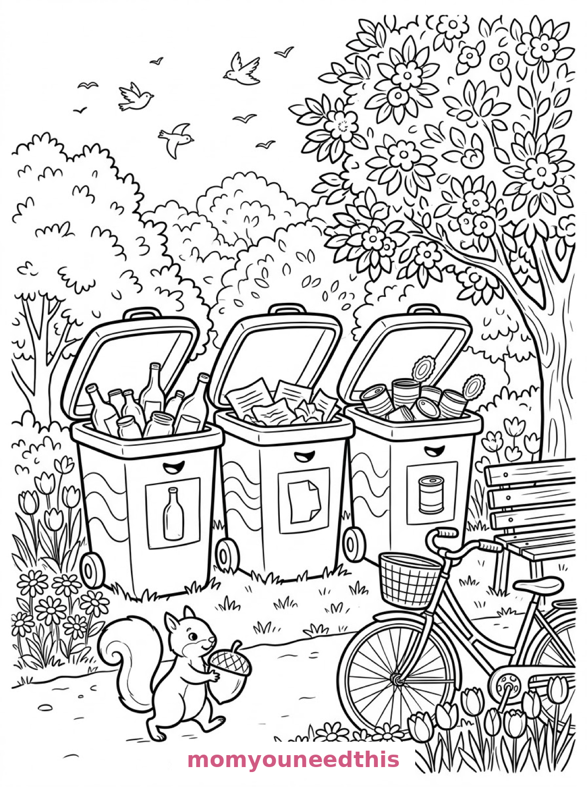

Free Earth Day Coloring Pages Tree Planting, Planet Earth & Recycling Printables
These free earth day coloring pages show kids caring for the planet in three simple ways — planting a young tree, celebrating the Earth itself, and sorting recycling in the park. Download the set below, print at home on letter-size paper, and let the coloring fun begin. No signup needed.
Last updated: October 23, 2026
Quick Answer
Yes — this page has three free printable earth day coloring pages: a young sapling being planted and watered in a garden, the planet Earth ringed by a leafy vine with a waterfall and rainbow, and three recycling bins in a leafy park with a squirrel. Bold outlines and big spaces, made for little hands. Download, print on letter-size paper, and hand over the crayons — no signup, no cost.
At a Glance
- Ages: 3–8
- Pages: 3 free printables
- Format: Print at home, letter size
- Cost: Free, no signup
- Supplies: Crayons or markers
- Time: 10–20 minutes
🌱 Planting a Sapling Coloring Page

🎨 Download Your Free Tree Planting Coloring Page
A young tree sapling with broad leaves is watered from a tall watering can, beside a shovel in a mound of earth, a wheelbarrow heaped with soil and seed packets, a bed of sprouting seedlings, a picket fence and a robin watching — bold outlines, big spaces, zero signup.
⬇️ Download Free Tree Planting Page 🖨️ Print Tree Planting Page🎁 Free printable for preschoolers & kids
🌍 Planet Earth with a Vine Wreath Coloring Page

🎨 Download Your Free Planet Earth Coloring Page
The planet Earth drawn as a round storybook globe with smiling continents, ringed by a winding vine of leaves and flowers, with a waterfall pouring into a pond where a frog sits on a lily pad, a rainbow overhead and butterflies and bees drifting — bold outlines, big spaces, zero signup.
⬇️ Download Free Planet Earth Page 🖨️ Print Planet Earth Page🎁 Free printable for preschoolers & kids
♻️ Recycling in the Park Coloring Page

🎨 Download Your Free Recycling Coloring Page
Three storybook recycling bins with wide open lids stand in a leafy park — one filled with bottles, one with crumpled paper and one with tin cans — with a squirrel carrying an acorn past them, a bicycle by a bench and birds circling above — bold outlines, big spaces, zero signup.
⬇️ Download Free Recycling Page 🖨️ Print Recycling Page🎁 Free printable for preschoolers & kids
More Coloring Pages
Tap any picture to open its theme page and download the free printable.


🌍 How To Use This Page
- Browse the three designs and pick the Earth-friendly scene your child will love most.
- Tap download or print under that design — the file opens full-size, ready for letter-size paper.
- Print a couple of copies of the planet page — it is the most requested design every April.
- Color together with crayons or markers and talk about each kind act on the page.
🌱 Why Kids Love Earth Day Coloring Pages
Earth Day coloring works because the actions are ones kids can actually do: water a plant, sort the recycling, love the planet they're standing on. These three pages show all three — a sapling going into the ground, the whole smiling Earth, and a park where the bins are doing their job beside a squirrel.
They are also quietly educational without feeling like a lesson. The recycling page alone names three materials — bottles, paper, cans — and gives each its own bin, so the sorting idea lands while the crayons move.
🌍 Meet the Three Earth Day Scenes on This Page
The sapling. A young tree sapling with broad leaves is being watered from a tall watering can, with a shovel stuck in a mound of earth beside it, a wheelbarrow heaped with soil and seed packets, a row of sprouting seedlings in a garden bed behind, a picket fence, and a robin perched on the fencepost watching over the garden. It is the gentlest page in the set — a garden, a tree, and a job done right.
The planet. The Earth drawn as a round storybook globe with smiling continents, ringed by a winding vine of leaves and flowers, with a waterfall pouring from one side into a pond where a frog sits on a lily pad, a rainbow arcing overhead, pine trees and mountains along the bottom, and butterflies and bees drifting among the leaves. It is the happiest page in the set — the whole planet in one coloring sheet.
The recycling park. Three storybook recycling bins with wide open lids stand in a leafy park — one filled with bottles, one with crumpled paper, one with tin cans — with a squirrel carrying an acorn past them, a bicycle leaning against a bench nearby, flower beds and a blossoming tree framing the scene, and birds circling above the treetops. It is the most teachable page in the set: three bins, three materials, one tidy park.
✏️ Earth Day Coloring Tips
- Blue oceans, green continents. On the planet page, the classic two-color Earth makes the smiling continents read instantly — then decorate the vine ring any way you like.
- Give each bin its own color. Blue, yellow, green — matching real recycling-bin colors where you live turns the page into a sorting lesson.
- Make the seedlings hopeful. Bright spring greens on the sapling and seedling bed say “growing” louder than any caption.
- Rainbow rules apply. The rainbow over the planet can carry all seven colors in order — a built-in color-sequence practice.
🌍 Coloring Pages for Different Ages
For ages 3 to 4, start with the sapling. One little tree, a big watering can and a robin are all a little colorer needs, and the garden around it can wait.
For ages 5 to 6, the recycling park is the sweet spot. The three bins are big and bold, and naming what goes in each one turns coloring into a sorting game.
For ages 7 to 8, hand over the planet. The continents, the vine ring, the waterfall and the rainbow reward careful coloring — and the finished globe makes a genuinely lovely poster.
🌱 More Earth Day Fun After Coloring
Do one thing from the pages: water a real plant, sort a real recycling bin together, or plant a seed in a cup on the windowsill. The sapling on the first page has a head start — see whose grows taller by summer.
For more growing things to color, the spring coloring pages bring flowers and butterflies — and the mushroom coloring pages grow a whole forest-floor world in the same storybook style.
🔗 More Free Printables You’ll Love
- Free Spring Coloring Pages Flowers, butterflies and spring scenes for little learners.
- Free Mushroom Coloring Pages Mushroom houses and cottages in a gentle storybook style.
- Free Bunny Coloring Pages Garden, burrow and orchard bunnies to print and color.
- All Free Coloring Pages Browse every free coloring page on the site, organized by theme.
❓ Earth Day Coloring Pages FAQ
Are these earth day coloring pages really free?
Yes — all three designs on this page are free original printables from MomYouNeedThis. Download them, print them at home, and color — no signup and no cost.
What ages are these coloring pages best for?
Kids ages 3 to 8 get the most from this set. The sapling is the gentlest start for younger children, while the recycling park and planet designs have the detail older kids enjoy.
How do I print a coloring page?
Tap the download button under the design you want, then print the file on regular letter-size paper. The print button opens the full-size page in a new tab if you prefer to print from there.
Is there a recycling coloring page in this set?
Yes — the third design shows three park recycling bins, each filled with a different material: bottles, crumpled paper and tin cans. It is a gentle way to practice sorting while coloring.
Can I make an Earth Day coloring book from these pages?
Yes — print all three designs, stack them in order, and staple along the left edge. Add a cover sheet with your child's name for a finished homemade Earth Day coloring book.